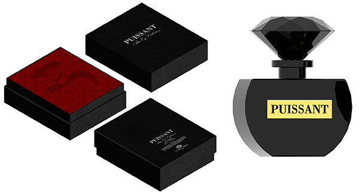

Packaging in Graphic design
This college project was about designing the bottle and packaging for the perfume. Traditonal French fragrance houses are steeped in a rich history of style and imagery. L'Artisan wants to break with this convention. Their latest collection is uniquely based around bottled emotions. My challenge was to showcase this range by breaking the rules of conventional perfume packaging. Modernising the brand and taking on a more innovative approach to packaging were my goals. My design has the quality, craftsmanship and authenticity that L'Artisan Parfumer is known for. Discerning shoppers are looking for a unique perfume experience. It is not about age, but about the mindset.
